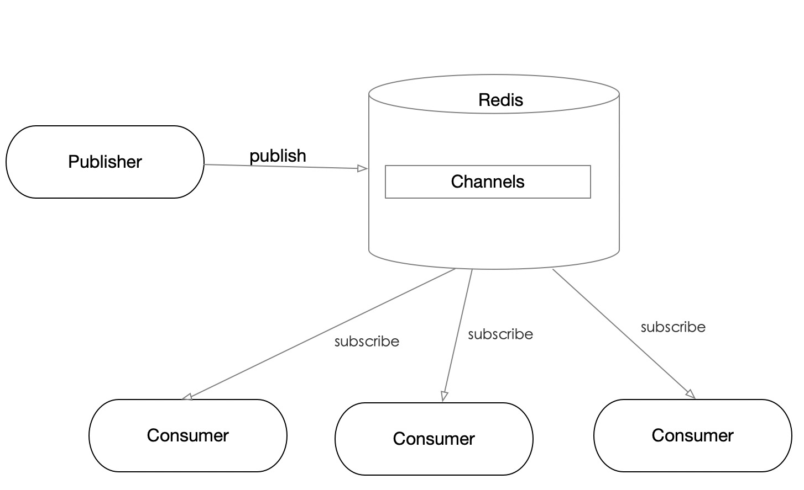

Redis特点
- 是一个单线程应用。
- 是一个内存中的数据结构存储系统，支持丰富数据类型。
- 常用作缓存，可以持久化数据到缓存。
- 支持简单的消息队列协议，可用作普通的消息队列中间件。
- 内置Lua脚本支持。
- 支持事务和LRU事件。
Pub/Sub（分发和订阅）
Publisher（生产者）不将消息发送给特定的Consumer（消费者），而是发送到channel（频道）。订阅相应channel的Consumer都将收到消息，Publisher往channel分发消息，它不需要知道都有哪些Consumer订阅了消息。

下面是Pub/Sub最简单的使用。
首先客户端订阅了两个channel。分别是first，second。
127.0.0.1:6379[1]> SUBSCRIBE first second
Reading messages... (press Ctrl-C to quit)
1) "subscribe"
2) "first"
3) (integer) 1
1) "subscribe"
2) "second"
3) (integer) 2
服务端Publisher分发消息
127.0.0.1:6379> PUBLISH first hello
(integer) 1
127.0.0.1:6379> PUBLISH second "hello redis"
(integer) 1
客户端将收到如下消息
1) "message"
2) "first"
3) "hello"
1) "message"
2) "second"
3) "hello redis"
Pipelining模式
Pipelining即管道。使用Pipelining，我们可以一次向Redis发送多个命令请求，并一次获得请求结果。Pipelining有如下优点。
- 避免单个命令发送多次阻塞。Redis每一个命令请求，Client都会阻塞等待结果。Pipelining一次向Redis Server发送多个命令，减少了阻塞次数。
- 减少了网络RTT。Pipelining将请求和回复一次传输，减少了网络传输次数和总时间。
- 降低了Socket IO时间。对于Redis命令，请求和产生结果相对较快，而读写IO相对较慢。一次Pipelining请求只读写一次IO，这比多个命令分开请求减少了IO读写次数。
数据持久化
Redis提供RDB和AOF两种持久化方式。RDB持久化方式会在一个特定的间隔保存那个时间点的一个数据快照。AOF持久化方式则会记录服务器收到的每一个写操作。在服务启动时， 重新执行这些日志重建原来的数据。RDB工作方式
- Redis调用fork()，产生一个子进程。
- 子进程把数据写到一个临时的RDB文件。
- 当子进程写完新的RDB文件后，把旧的RDB文件替换掉。
RDB和AOF优缺点对比
参加Redis持久化和官网Redis Persistence
内存优化
- Redis string数据结构没有采用C预约的string，而是自己设计了数据结构，保持了字符串长度和预分配空间。由于预分配空间的存在，会造成内存浪费，因此不要频繁的使用字符串append操作。
- 共享内存。Redis存储整数时会共享内存。但是设置maxmemory和LRU时失效，应注意相关数据和设置的优化。
- 编码优化。使用OBJECT encoding key查看编码方式。
- 控制key数量。过多的key会造成内存浪费，可以将多个key整合到hash类型里，并保证value不超过hash-max-ziplist-value限制，这样可以利用ziplist编码。
参考Redis的内存优化和官网memory-optimization
缓存更新策略
- key过期清除（超时剔除）策略
- Redis的内存淘汰策略
事务
Redis通过MULTI、DISCARD、EXEC和WATCH四个命令来实现事务功能。Redis事务并不保证严格的事务特性，当执行错误时，并不能回滚到之前的操作。下面是Redis事务和严格事务的特性对比。
- 原子性（Atomicity），Redis单个命令是原子性的，但是Redis事务并不保证原子性，因为执行发生错误它并不回滚。
- 一致性（Consistency），入队错误，执行错误保证一致性。
- 隔离性（Isolation），Redis是单线程，事务总是满足隔离性的。
- 持久性（Durability），持久性和是内存模式还是硬盘模式有关。内存模式重启数据丢失。
数据类型
string
Redis的string类型未复用C，未自定义类型SDS。类型定义如下。
struct sdshdr {
// 字符串长度
int len;
// buf 中剩余可用空间的长度
int free;
// 字符数组，保存字符串的地方
char buf[];
};
使用SDS有如下优点。 - 方便获取字符串长度，时间复杂度O(1)。 - SDS的free可以减少字符串扩展和收索时的内存再分配次数（但是可能导致内存费）。 - 二进制安全。不靠'\0'判断字符串是否结束。而是字符串长度。
list
Redis中的list底层是一个双向链表，如下。
typedef struct listNode{
struct listNode *prev;
struct listNode * next;
void * value;
};
hash
typedef struct dictht {
//哈希表数组
dictEntry **table;
//哈希表容量大小
unsigned long size;
//哈希表大小掩码，用于计算索引值
unsigned long sizemask;
//元素个数
unsigned long used;
};
typeof struct dictEntry{
//键
void *key;
//值
union{
void *val;
uint64_tu64;
int64_ts64;
}
struct dictEntry *next;
};
解决hash冲突：采用链地址法来实现。
set
typedef struct intset{
//编码方式
uint32_t enconding;
// 集合包含的元素数量
uint32_t length;
//保存元素的数组
int8_t contents[];
};
整数集合是集合建的底层实现之一。
sorted set
typedef struct zskiplistNode{
//层
struct zskiplistLevel{
//前进指针
struct zskiplistNode *forward;
//跨度
unsigned int span;
} level[];
//后退指针, 用于从表尾向表头方向访问节点
struct zskiplistNode *backward;
//分值, 用于排序
double score;
//成员对象
robj *obj;
};
上面的结构叫跳跃表（skiplist），是一种有序数据结构，它通过在每个节点中维持多个指向其他节点的指针，从而达到快速查找访问节点的目的。 参考《Redis设计与实现》和博文Redis原理
上面是Redis一个大概知识点，后期会针对每个知识点深入了解并记录相关笔记。